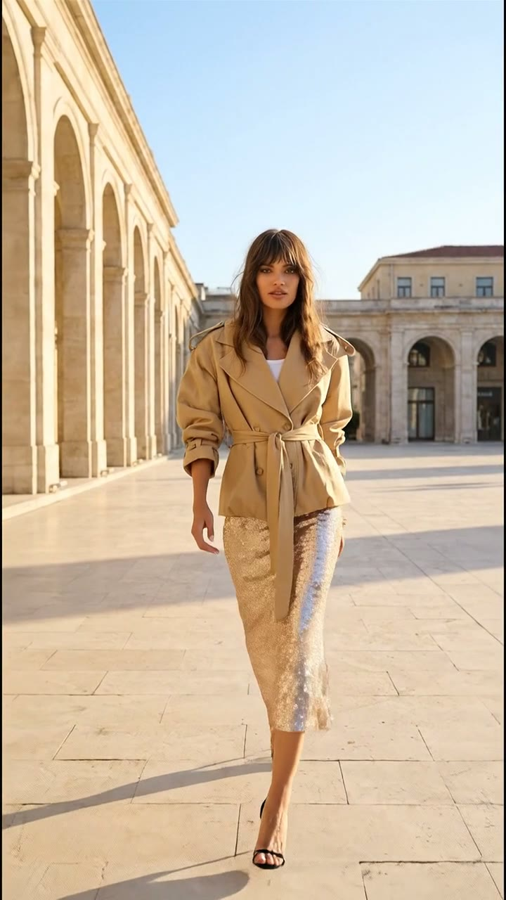
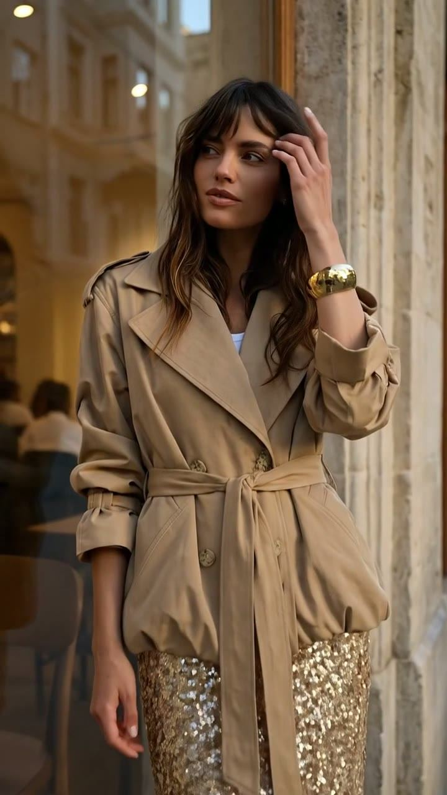
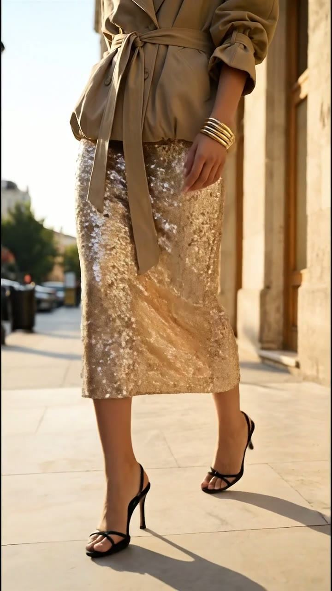

Hybrid production
Mentos
In the rhythm of the city.
The camera recorded, imagination kept going. Working with our shooting partner, we started with reality and opened up its limits with AI.
34 secView project
Mon Digital, an AI-powered creative studio
We turn your product photos into model imagery, campaign series and short ad films. Depending on the project, we combine AI production with real shoots.
Hybrid production
In the rhythm of the city.
The camera recorded, imagination kept going. Working with our shooting partner, we started with reality and opened up its limits with AI.
34 secView project



Brand collaboration
Your day changes, your sparkle stays.
One outfit in the same city, from first light to evening. The product stays the same; the way it feels changes.
15 secView project
Brand collaboration · Quinzell
How far can a single product photo go? Starting from Quinzell’s ghost mannequin photos, we created on-model visuals, color alternatives and three short fashion films. Showing the same products in different colors and scenes, the work also gave the team room to weigh their options before production.

The product’s ghost mannequin photo.

The product, visualized on a model.


The same set in sage and burgundy.

Color change film, 18 sec.
View project The other product series and all three films are on the project page.
We work project by project or on a regular monthly basis.
Output: campaign idea, visual direction and narrative.
Output: product and model visuals, color alternatives, campaign series.
Output: short ads and fashion films adapted to publishing formats.
Output: image and video content on a monthly plan, in one visual language.
Founded in 2019, MON Digital is a creative studio producing creative concepts, campaign visuals and ad films for brands.
Melis Ay, MON’s founder, studied at Galatasaray High School, then advertising at Bahçeşehir University and marketing at Universidad San Jorge. After entering the digital world through a social media internship in 2017, Melis went on to work in digital marketing, social media and content production. Today, at MON, Melis creates AI-powered visuals and ad films for brands.
A product photo, a new collection or an idea still taking shape… Share what’s on your mind, and let’s define the visual direction, content needs and production scope together.